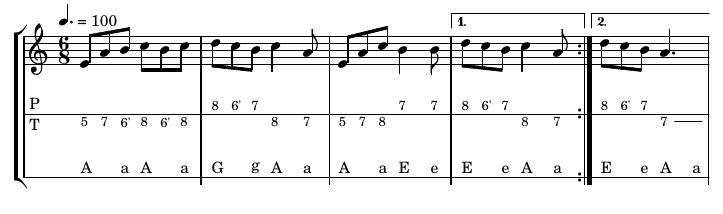

---
# Feel free to add content and custom Front Matter to this file.
# To modify the layout, see https://jekyllrb.com/docs/themes/#overriding-theme-defaults
layout: home
title: Tabliato
---
Logiciel de tablatures pour accordéon diatonique
Tabliato est un logiciel libre et gratuit permettant de créer des tablatures de grande qualité pour accordéon diatonique.
Tabliato permet de saisir facilement une tablature. L'utilisateur entre le numéro des touches au clavier et le programme
se charge de produire une tablature de qualité professionelle. Tabliato repose sur Lilypond, un logiciel libre de gravure
musicale, destiné à produire des partitions de grande qualité.
L'interface graphique permet de saisir la musique en simplifiant la syntaxe. L'écriture de la partition
au clavier plutôt que l'édition avec une souris peut sembler plus difficile. En réalité, les utilisateurs de Lilypond
ou de LaTeX le savent, elle se révèle dans la pratique incroyablement plus simple, rapide et puissante.
Interprétation automatique
Vous n'avez pas à entrer les notes. Entrez uniquement les touches de l'accordéon. Ainsi même sans connaître la musique
vous pouvez écrire des tablatures. Cependant l'inverse fonctionne aussi. Entrez les notes et tabliato trouve le ou les boutons correspondants. Lisez la page sur la syntaxe d'écriture de tablatures.
Transposition du système CADB et Corgeron
Écrivez la musique une seule fois et exportez la tablature dans votre système préféré.
Vous écrivez les numéros des boutons et le logiciel se charge de convertir soit
dans le système CADB soit dans le système Corgeron au choix.
Lecture de la musique au format audio
Tabliato exporte aussi le fichier son de votre partition au format
midi
ou ogg. Une fonction de lecture permet de lire directement la musique dans le logiciel. Un soin particulier
a été mis dans le rendu de la musique générée en utilisant de vrais enregistrements d'accordéons.
Danse de l'ours - Musique générée par tabliato
En avant blonde - Musique générée par tabliato
Suivi de la musique
Lorsque la musique est jouée un curseur suit la musique en direct

Coloration syntaxique du code
Le code de la partiton est coloré pour pouvoir le lire plus facilement. Les mots clés de la syntaxe Lilypond sont en bleu tandis que la musique
est en bleu ou en rouge en fonction du sens poussé ou tiré des notes. La durée est indiquée en jaune.
Export de la tablature et de la musique
Tabliato permet de sauvegarder votre tablature aux formats pdf ou au format image png (préférez le pdf qui permet d'avoir une image vectorielle).
La musique quant à elle peut être sauvegardée aux formats midi ou au format audio wav (windows) ou ogg (linux).